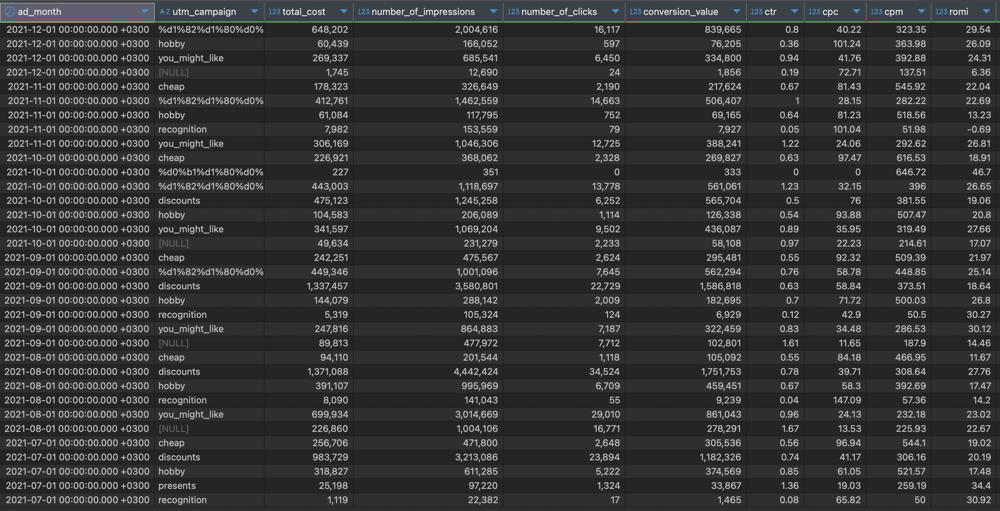

Project 8 – Cross-Platform Ad Analysis Dashboard (SQL)
Overview
This analysis calculates the ROI / ROMI of multiple digital ad campaigns with SQL and compares their efficiency. Beyond cost, it evaluates user value and conversion capability in detail.
What does it deliver?
- Side-by-side cost-and-profit comparison of several campaigns.
- Highlights not the biggest spenders but the most efficient performers.
- Presents impressions, clicks, conversions and revenue in one view.
- Measures campaign effectiveness using ROMI and an Efficiency Index.
- Enables marketing strategies driven by efficiency instead of budget size alone.
Bottom-line: Answers not only “Which campaign earns more?” but also “Which campaign is truly more effective?”
Data-Driven Recommendations
- Boost reach for high-ROI but low-engagement campaigns.
- Scale campaigns with low spend / high ROMI using similar targeting.
- For high-impression / low-conversion campaigns, review creatives or landing pages.
- Clone top-performing segments (geo, device, demographic) and A/B test.
- Track cost-efficiency regularly and adjust budgets dynamically.
Technical Analysis
Tools: PostgreSQL / BigQuery
Data Fields: ad_platform, campaign_id, ad_spend, revenue, clicks, impressions, conversions, date
Key SQL Steps & Metrics:
- Campaign Normalisation: All platforms UNIONed into one table with a
platformflag. - ROMI Formula:
(revenue − ad_spend) / ad_spend; negatives flagged. - Efficiency Index:
(ROMI × conversions) / impressions. - Segmentation: GROUP BY + HAVING to label efficient / inefficient clusters.
- Category Benchmark: Compare “Video”, “Conversion”, “Retargeting” campaign types.
Tech Stack:
PostgreSQL